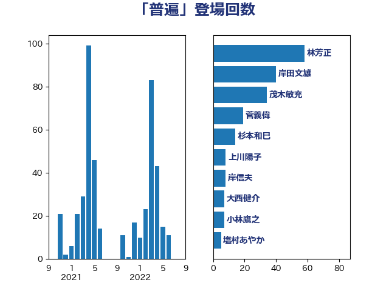

単語「普遍」

| 林芳正 | 自由民主党 | 58 回 |
| 岸田文雄 | 自由民主党 | 40 回 |
| 茂木敏充 | 自由民主党 | 34 回 |
| 菅義偉 | 自由民主党 | 19 回 |
| 杉本和巳 | 日本維新の会 | 14 回 |
| 上川陽子 | 自由民主党 | 8 回 |
| 岸信夫 | 自由民主党 | 8 回 |
| 大西健介 | 立憲民主党 | 7 回 |
| 小林鷹之 | 自由民主党 | 7 回 |
| 塩村あやか | 立憲民主党 | 5 回 |
| 小田原潔 | 自由民主党 | 5 回 |
| 伊藤孝恵 | 国民民主党 | 4 回 |
| 加藤勝信 | 自由民主党 | 4 回 |
| 小西洋之 | 立憲民主党 | 4 回 |
| 岡田克也 | 立憲民主党 | 4 回 |
| 松野博一 | 自由民主党 | 4 回 |
| 矢倉克夫 | 公明党 | 4 回 |
| 高良鉄美 | 無所属 | 4 回 |
| ながえ孝子 | 無所属 | 3 回 |
| 中西祐介 | 自由民主党 | 3 回 |
| 古川禎久 | 自由民主党 | 3 回 |
| 末松信介 | 自由民主党 | 3 回 |
| 津島淳 | 自由民主党 | 3 回 |
| 田村智子 | 日本共産党 | 3 回 |
| 羽田次郎 | 立憲民主党 | 3 回 |
| 鷲尾英一郎 | 自由民主党 | 3 回 |
| 下村博文 | 自由民主党 | 2 回 |
| 吉良州司 | 無所属 | 2 回 |
| 大野敬太郎 | 自由民主党 | 2 回 |
| 小熊慎司 | 立憲民主党 | 2 回 |
| 平井卓也 | 自由民主党 | 2 回 |
| 有村治子 | 自由民主党 | 2 回 |
| 本庄知史 | 立憲民主党 | 2 回 |
| 枝野幸男 | 立憲民主党 | 2 回 |
| 柴田巧 | 日本維新の会 | 2 回 |
| 浅田均 | 日本維新の会 | 2 回 |
| 玉木雄一郎 | 国民民主党 | 2 回 |
| 紙智子 | 日本共産党 | 2 回 |
| 足立康史 | 日本維新の会 | 2 回 |
| 辻清人 | 自由民主党 | 2 回 |
| 三宅伸吾 | 自由民主党 | 1 回 |
| 上田清司 | 国民民主党 | 1 回 |
| 中山展宏 | 自由民主党 | 1 回 |
| 佐藤英道 | 公明党 | 1 回 |
| 佐藤茂樹 | 公明党 | 1 回 |
| 加田裕之 | 自由民主党 | 1 回 |
| 勝部賢志 | 立憲民主党 | 1 回 |
| 北側一雄 | 公明党 | 1 回 |
| 原口一博 | 立憲民主党 | 1 回 |
| 古賀友一郎 | 自由民主党 | 1 回 |
| 吉田久美子 | 公明党 | 1 回 |
| 吉田統彦 | 立憲民主党 | 1 回 |
| 嘉田由紀子 | 無所属 | 1 回 |
| 國場幸之助 | 自由民主党 | 1 回 |
| 國重徹 | 公明党 | 1 回 |
| 坂井学 | 自由民主党 | 1 回 |
| 城内実 | 自由民主党 | 1 回 |
| 安江伸夫 | 公明党 | 1 回 |
| 小沼巧 | 立憲民主党 | 1 回 |
| 小野田紀美 | 自由民主党 | 1 回 |
| 山口壯 | 自由民主党 | 1 回 |
| 山口那津男 | 公明党 | 1 回 |
| 山本博司 | 公明党 | 1 回 |
| 山田美樹 | 自由民主党 | 1 回 |
| 岬麻紀 | 日本維新の会 | 1 回 |
| 後藤祐一 | 立憲民主党 | 1 回 |
| 松山政司 | 自由民主党 | 1 回 |
| 松本尚 | 自由民主党 | 1 回 |
| 松沢成文 | 日本維新の会 | 1 回 |
| 梶山弘志 | 自由民主党 | 1 回 |
| 櫻井周 | 立憲民主党 | 1 回 |
| 泉健太 | 立憲民主党 | 1 回 |
| 浅野哲 | 国民民主党 | 1 回 |
| 渡辺周 | 立憲民主党 | 1 回 |
| 滝沢求 | 自由民主党 | 1 回 |
| 片山さつき | 自由民主党 | 1 回 |
| 田中健 | 国民民主党 | 1 回 |
| 石井浩郎 | 自由民主党 | 1 回 |
| 石井章 | 日本維新の会 | 1 回 |
| 石井苗子 | 日本維新の会 | 1 回 |
| 石垣のりこ | 立憲民主党 | 1 回 |
| 石川博崇 | 公明党 | 1 回 |
| 石川大我 | 立憲民主党 | 1 回 |
| 磯崎仁彦 | 自由民主党 | 1 回 |
| 秋野公造 | 公明党 | 1 回 |
| 笠井亮 | 日本共産党 | 1 回 |
| 菊田真紀子 | 立憲民主党 | 1 回 |
| 萩生田光一 | 自由民主党 | 1 回 |
| 西岡秀子 | 国民民主党 | 1 回 |
| 西村智奈美 | 立憲民主党 | 1 回 |
| 赤嶺政賢 | 日本共産党 | 1 回 |
| 赤羽一嘉 | 公明党 | 1 回 |
| 野上浩太郎 | 自由民主党 | 1 回 |
| 鈴木憲和 | 自由民主党 | 1 回 |
| 鈴木貴子 | 自由民主党 | 1 回 |
| 青山大人 | 立憲民主党 | 1 回 |
| 青柳仁士 | 日本維新の会 | 1 回 |
| 音喜多駿 | 日本維新の会 | 1 回 |
| 高市早苗 | 自由民主党 | 1 回 |
| 高階恵美子 | 自由民主党 | 1 回 |